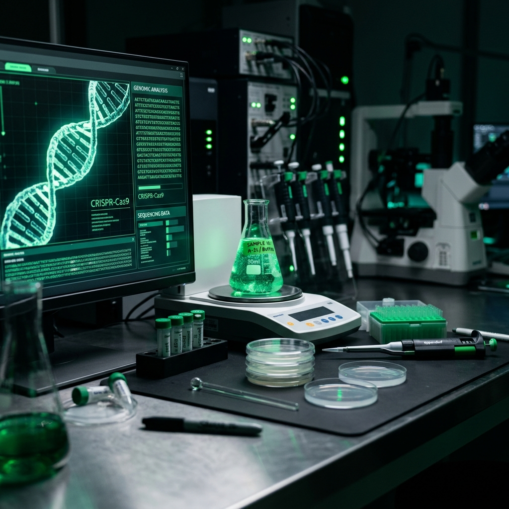
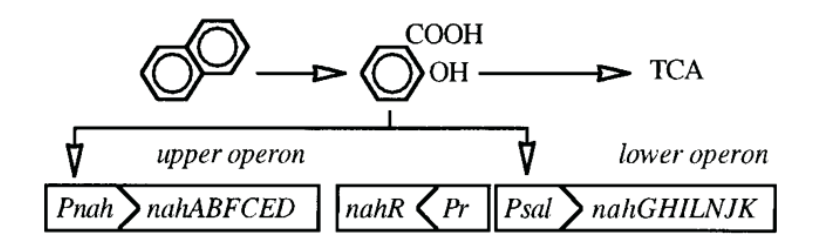
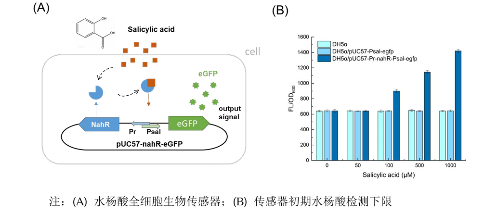
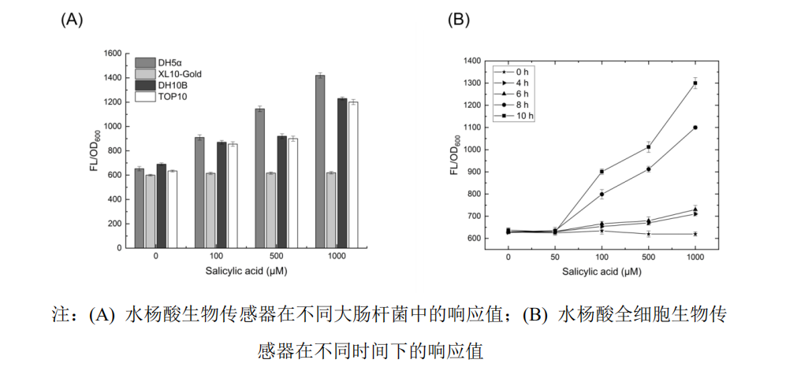

Construction of Salicylic Acid Sensing Pathway
We engineered a whole-cell biosensor by reconstructing the NahR/Psal regulatory pathway to detect salicylic acid — a central intermediate in PAH degradation.

Overview
Polycyclic aromatic hydrocarbons (PAHs) are a group of widespread environmental pollutants with strong mutagenic, carcinogenic, and teratogenic properties. Bioremediation using engineered microorganisms presents a cost-effective and environment-friendly approach to remove PAHs from contaminated sites. Recent microbial degradation studies reveal that the degradation of most PAHs in bacteria proceeds through the salicylic acid pathway (Salicylic acid, SaA), ultimately entering the tricarboxylic acid (TCA) cycle. Therefore, monitoring the concentration of salicylic acid serves as a reliable indicator for assessing PAH biodegradation efficiency.
In this work, we developed and characterized a whole-cell biosensor system based on a reconstructed salicylic acid sensing pathway. By employing a transcriptional regulator responding specifically to salicylic acid and directing the expression of a fluorescent reporter protein, we succeeded in obtaining a quantitative and sensitive biosensing output. This biosensor provides a fundamental tool for our project to dynamically track PAHs metabolic fluxes and optimize the genetic circuits in our bioremediation strains.
Sensing System Design & Mechanism
The sensing system is derived from the well-characterized NahR/Psal regulatory system on the NAH7 plasmid of Pseudomonas putida G7. The wild-type pathway contains two operons (nahAaAbAcAdBFCED and nahGTHINLOMKL) involved in naphthalene metabolism. The upper operon, controlled by the Pnah promoter, encodes enzymes responsible for transforming naphthalene to salicylic acid. The lower operon, controlled by the Psal promoter, encodes enzymes that convert salicylic acid into TCA cycle intermediates. Both operons are positively regulated by the transcriptional activator NahR, which undergoes conformational changes to recruit RNA polymerase upon binding to its inducer, salicylic acid.

To construct a biosensor with low background leakiness and high sensitivity, we designed the recombinant plasmid pUC57-Pr-NahR(mut)-Psal-eGFP. In this genetic circuit, the expression of the transcriptional activator NahR is driven by its native constitutive promoter (Pr-nahR), while the reporter gene eGFP (enhanced Green Fluorescent Protein) is placed under the control of the inducible Psal promoter. To optimize the signal-to-noise ratio, we incorporated a site-directed double mutation (N169E/R248C) in the NahR protein. Literature reports indicate that this specific mutant displays a significantly reduced basal transcriptional activity in the absence of salicylic acid, while maintaining an extremely high level of induction when exposed to the inducer, making it ideal for quantitative whole-cell biosensing.
Materials & Methods
Major Equipment & Medium Formulas
The molecular biology experiments were conducted using high-precision instruments. The specific media formulas prepared for E. coli cultivation are listed in the tables below.
| Equipment Name | Manufacturer / Company |
|---|---|
| PCR Thermocycler (PCR仪) | Bio-Rad (USA) |
| Agarose Gel Electrophoresis System (核酸凝胶电泳仪) | Bio-Rad (USA) |
| Ultra-low Temperature Freezer (超低温冰箱) | Thermo Scientific (USA) |
| pH Meter (pH 计) | Mettler-Toledo (Switzerland) |
| Constant Temperature Incubator (恒温培养箱) | Keli Tianjin (科力天津) / Keli Instruments (科力仪器) |
| Rotary Shaker (摇床) | Tianjin Ounuo (天津欧诺) |
| Microplate Reader (酶标仪) | Molecular Devices (USA) |
| Drying Oven (烘干箱) | Shanghai Hengyi (上海恒一) |
| Gel UV Transilluminator (紫外成像仪) | Beijing Liuyi (北京六一) |
| Refrigerated Centrifuge (冷冻离心机) | Beckman Coulter (USA) |
| Clean Bench (超净工作台) | AIRTECH (USA) |
| Vertical Autoclave (立式灭菌锅) | Hefei Huatai (合肥华泰) |
| High Performance Liquid Chromatography (HPLC) | Shimadzu (岛津, Japan) |
| Medium Name | Composition & Preparation Details |
|---|---|
| LB (Luria-Bertani) | 0.5% NaCl, 0.5% Yeast extract, 1.0% Tryptone. Solid medium requires addition of 1.5% Agar. |
| LK (LB + Kanamycin) | LB medium supplemented with Kanamycin (Kana) to a final concentration of 50 μg/mL. |
| LA (LB + Ampicillin) | LB medium supplemented with Ampicillin (Amp) to a final concentration of 100 μg/mL. |
| NZY | 1.0% NZ Amine, 0.5% NaCl, 0.5% Yeast extract, 10 mM MgSO₄, 10 mM MgCl₂, 20 mM Glucose. |
| Minimal Salt Medium (基础培养基) | 0.5 g/L KH₂PO₄, 0.5 g/L K₂HPO₄, 0.2 g/L MgSO₄, 0.1 g/L CaCl₂, 0.2 g/L NaCl, 1 g/L (NH₄)₂SO₄. |
PCR Expansion Protocol
The fragments of Pr-nahR(E169/C248)-Psal and eGFP were amplified via high-fidelity PCR. The reaction layout and thermocycling profile were set up as follows.
| Reaction Component | Volume | Final Concentration |
|---|---|---|
| 2× High-Fidelity Master Mix (2×高保真预混酶) | 25 μL | 1× |
| Forward Primer (10 μM) (正向引物) | 2 μL | 0.4 μM |
| Reverse Primer (10 μM) (反向引物) | 2 μL | 0.4 μM |
| Plasmid DNA Template (~100 ng/μL) (质粒模板) | 2 μL | ~200 ng |
| ddH₂O | 14 μL | — |
- Pre-denaturation: Incubate at 98 °C for 10 min to ensure complete template DNA denaturation and activate the hot-start DNA polymerase.
- Cycling Stages (28 cycles): Denaturation at 98 °C for 30 s to melt DNA strands; Annealing at 60 °C (optimized to primer Tm) for 30 s; Extension at 72 °C for 30 s to synthesize the daughter strands.
- Final Extension: Incubate at 72 °C for 5 min to finish any incomplete truncated products.
- Hold Stage: Maintain temperature at 12 °C to prevent product degradation prior to collection.
Agarose Gel DNA Extraction
To purify the target linearized fragments, agarose gel electrophoresis was performed, followed by slice-based extraction using a DNA gel recovery kit.
- Excise the target DNA band from the gel under a UV transilluminator quickly with a clean scalpel. Remove excess gel margins, blot dry the surface, and transfer the slice to a sterile 1.5 mL EP tube.
- Add 300 μL Buffer GDP to the tube. Incubate in a water bath at 55–60 °C for ~10 min, inverting the tube periodically to ensure that the gel slice is completely dissolved.
- Transfer the dissolved gel mixture into the DNA spin column. Centrifuge at 12,000 rpm for 30 s and discard the flow-through. Repeat the step if the volume exceeds column limits.
- Add 300 μL Buffer GDP into the spin column. Centrifuge at 12,000 rpm for 30 s to wash the column membrane.
- Add 650 μL Wash Buffer to the spin column. Centrifuge at 12,000 rpm for 1 min and discard the flow-through.
- Add 700 μL Buffer GW (pre-mixed with absolute ethanol) to the column. Centrifuge at 12,000 rpm for 30 s and discard the flow-through.
- Repeat the washing step once, then centrifuge the empty column at 12,000 rpm for 2 min to dry the silica membrane completely.
- Transfer the dried column to a clean, sterile 1.5 mL EP tube. Pipette 30 μL of sterile ddH₂O (pre-warmed to 65 °C) onto the center of the membrane. Let stand for 2–5 min, then centrifuge at 12,000 rpm for 1 min. Keep the eluted DNA solution.
Recombination & Transformation
The target promoter-regulator fragment was assembled into the linearized pUC57 vector via homologous recombination, and then transformed into E. coli competent cells for amplification.
Recombination was performed using the ClonExpress II One Step Cloning Kit. Reagents were added as follows: 1 μL 5× CE II Buffer, 1 μL Exnase II, with target fragment and linearized vector mixed at a molar ratio of 2:1. Incubate the mixture at 37 °C for 30 min.
- Ice Bath: Pipette 5 μL of the recombinant product into 100 μL of chemically competent E. coli cells (thawed on ice). Mix gently and incubate on ice for 30 min.
- Heat Shock: Place the tube in a water bath at exactly 42 °C for 45 s without shaking, then transfer immediately to ice.
- Recovery: Incubate the cells on ice for 2 min, then add 200 μL of pre-warmed LB liquid medium (without antibiotics).
- Shaking Cultivation: Incubate the tube on a rotary shaker at 37 °C, 180 rpm for 45 min to express antibiotic resistance markers.
- Plating: Centrifuge at 5,000 rpm for 3 min. Discard ~200 μL of supernatant and resuspend the pellet in the remaining ~100 μL medium. Spread the cell suspension evenly on an LA solid agar plate (with Kana or Amp).
- Incubation: Allow the liquid on the plate surface to be fully absorbed, then invert the plate and incubate in an incubator at 37 °C overnight (12–16 h) until single colonies emerge.
Plasmid DNA Extraction
Recombinant plasmids were isolated from overnight cultures of positive clones using a mini-prep plasmid extraction kit based on alkaline lysis.
- Harvest 2–5 mL of overnight culture in a 1.5 mL EP tube. Centrifuge at 12,000 rpm for 1 min to collect the bacterial pellet, then discard the supernatant completely.
- Add 250 μL Solution P1 (resuspension buffer with RNase A). Vortex or pipette thoroughly until the bacterial pellet is completely homogeneous.
- Add 250 μL Solution P2 (lysis buffer). Invert the tube gently 6–8 times to mix. The solution should become clear and viscous. Avoid vortexing to prevent genomic DNA shearing.
- Add 350 μL Solution P3 (neutralization buffer). Invert the tube immediately and gently 6–8 times until white flocculent precipitate forms. Centrifuge at 12,000 rpm for 10 min.
- Transfer the clear supernatant carefully into the spin column (avoiding the pellet). Centrifuge at 12,000 rpm for 1 min and discard the flow-through.
- Add 500 μL Solution PW1 to wash the spin column membrane. Centrifuge at 12,000 rpm for 30 s and discard the flow-through.
- Add 600 μL Solution PW2 (wash buffer with ethanol). Centrifuge at 12,000 rpm for 30 s. Repeat the washing step once.
- Discard the filtrate, then centrifuge the empty column at 12,000 rpm for 3 min to dry the column membrane and remove trace ethanol.
- Place the column in a new sterile 1.5 mL EP tube. Add 30–100 μL pre-warmed Elution Buffer (or sterile water) to the center of the membrane. Let stand for 2 min, then centrifuge at 12,000 rpm for 2 min. Collect the purified plasmid.
- Measure the plasmid concentration and store the DNA at −20 °C.
Results & Discussion
Vector Construction and Sequencing Verification
To verify the successful cloning of the target genes into the pUC57 vector, PCR products were examined by agarose gel electrophoresis prior to cloning. As shown in the electropherogram, clear single bands of PCR amplification products corresponding to the expected sizes of Pr-nahR-Psal and eGFP fragments were obtained, indicating successful gene synthesis and target expansion. Recombinant plasmids purified from positive clones were sent to a biological company for sequencing. Alignment results showed that the cloned fragments matched our designed Pr-nahR(E169/C248)-Psal-eGFP construct without any mutations, confirming the correct assembly of our biosensor vector.
Biosensor Detection Limit Characterization
To investigate the detection threshold of the constructed whole-cell biosensor, we established both negative and positive controls: E. coli DH5α transformed with pUC57-Psal-eGFP (lacking the regulatory gene nahR) served as the positive control to determine if leaky expression from Psal occurred, while untransformed wild-type E. coli DH5α served as the negative control. Cultures were induced in LB liquid media supplemented with salicylic acid gradient concentrations of 0, 50, 100, 500, and 1,000 μM. Inductions were carried out for 4 hours after cells entered the logarithmic growth phase (OD₆₀₀ ~0.4–0.6).

Fluorescence intensity (Ex 488 nm / Em 511 nm) and optical cell density (OD₆₀₀) were measured, and the response was expressed as relative fluorescence (FL/OD₆₀₀). The results showed that both wild-type E. coli DH5α and the control DH5α/pUC57-Psal-eGFP showed zero fluorescence response to salicylic acid, proving that NahR is strictly required to activate Psal in the presence of salicylic acid. Furthermore, the newly constructed biosensor exhibited a robust green fluorescent signal once the concentration of salicylic acid reached 100 μM, defining the detection limit of our reconstructed sensing pathway to be 100 μM.
Optimal Host Strain Screening
The genetic background of host strains often plays a critical role in the metabolic performance and plasmid stability of synthetic circuits. To find the optimal host for our salicylic acid biosensor, we examined the performance of our constructed plasmid in four common laboratory E. coli host strains: XL10-gold, DH10B, Top10, and DH5α. Following heat-shock transformation, positive transformants of all strains were successfully isolated on LA plates (with Kanamycin) and confirmed by colony PCR.
Three single colonies were picked from each transformation group and grown overnight. The strains were then inoculated at a 1:100 ratio into LB liquid media containing Kanamycin and salicylic acid at varying concentrations (0, 100, 500, 1,000 μM). The cultures were shaken at 37 °C, 200 rpm, and the relative fluorescence output (FL/OD₆₀₀) was measured using a microplate reader. As shown in the host screening results (Fig. 3A), E. coli DH5α exhibited the highest relative fluorescence and the widest dynamic range of induction among all four strains, while XL10-gold and DH10B displayed lower sensitivity and higher basal leakiness. Therefore, E. coli DH5α was selected as the optimal host strain for all subsequent characterizations.
Optimal Induction Time Characterization
Induction time is another key factor for biosensors, as reporter proteins require time to fold and mature, and metabolic load can limit growth. To find the optimal induction time, E. coli DH5α harboring the biosensor plasmid was cultured overnight, inoculated at a 1:100 ratio into media containing salicylic acid (0, 50, 100, 500, 1,000 μM), and induced. Samples (200 μL) were taken from each concentration group at 0, 4, 6, 8, and 10 hours post-induction.

Relative fluorescence (FL/OD₆₀₀) was measured at each time point. Kinetic analysis (Fig. 3B) showed that under 100 μM salicylic acid induction, the fluorescence signal increased over time. The signal change was most pronounced at 10 hours, showing a significant dynamic range compared to the uninduced control. Therefore, 10 hours was determined as the optimal induction time for all subsequent whole-cell biosensing experiments, ensuring maximum output signal strength and assay reproducibility.